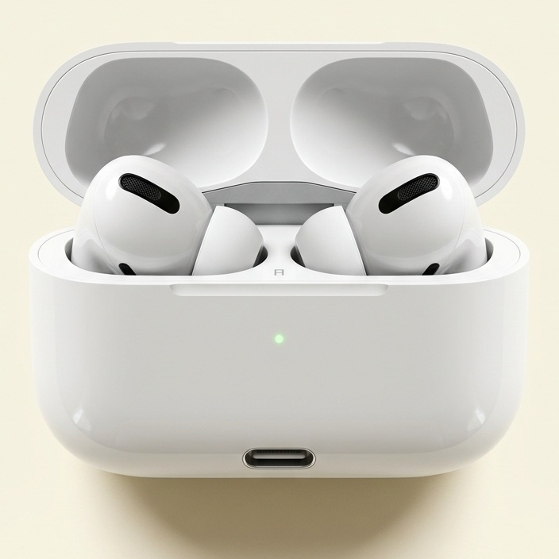

Con tu historia, tus palabras, el patrón exacto que te frena y el resultado que quieres construir. Sin generalidades. Sin audios genéricos de internet.

Piénsalo un momento. Coges el móvil para mirar una cosa y sales veinte minutos después sin recordar qué buscabas. Conduces un trayecto conocido y llegas sin acordarte de la mitad del camino.
Ves algo un segundo en una pantalla y se te queda dentro días, sin que tú lo decidieras. Repites sobre ti misma una frase que llevas media vida diciendo y que nunca te has parado a comprobar si es verdad.
Tu mente entra y sale todo el día de estados en los que baja la resistencia y absorbe lo que hay fuera. La diferencia es que, hasta ahora, casi nunca has elegido tú qué entra.
La pregunta no es si eres sugestionable.
La pregunta es quién ha estado escribiendo tus sugestiones.
Lo que escuchas mil veces deja de sonar a opinión y empieza a sonar a verdad.
Lo que crees verdad decide lo que haces.
Lo que haces cada día, repetido, es literalmente tu vida.
Nadie te sentó un día a decirte "no puedes cobrar eso". Se instaló despacio. Con una frase en casa. Con una vez que te salió mal. Con lo que viste que le pasaba a otra. Con lo que aprendiste que era "seguro".
Tu parte más profunda no distingue entre lo que es cierto y lo que se repite lo suficiente. Por eso los patrones se quedan. Y por eso mismo se pueden cambiar.
No porque sea mágica. Porque es uno de los pocos estados en los que tu mente deja de defenderse.
Durante el día tu cabeza vive en modo alerta: analizando, comparando, buscando el fallo, protegiéndote. En ese modo puedes escuchar mil veces que vales más y tu mente lo va a discutir mil veces. En un estado de atención profunda ocurre otra cosa: la vigilancia baja, la absorción sube y el mensaje entra sin pelea.
Pasas de la alerta constante a un lugar más abierto, más tranquilo, más disponible.
Tu hipnosis personalizada está diseñada para trabajar ahí. No para dormirte. Para hablarle a tu mente en el único momento en que no está discutiendo contigo.
QUIERO TRABAJAR MI PATRÓNEn 2016, un equipo de la Facultad de Medicina de Stanford, dirigido por el psiquiatra David Spiegel, demostró con resonancia magnética funcional (fMRI) lo que ocurre en el cerebro en estado hipnótico.
Estudio fMRI con 57 voluntarios en reposo vs. estado hipnótico guiado. Demuestra cambios fisiológicos medibles e instantáneos.
La corteza cingulada anterior dorsal, la parte que vive pendiente de todo lo de fuera, se desactiva. Es la razón por la que, en ese estado, dejas de estar en guardia.
Aumenta la conectividad entre la corteza prefrontal dorsolateral y la ínsula: el cerebro procesa y regula mejor lo que ocurre en el cuerpo físico.
Disminuye la conexión con la red que sostiene la autoconsciencia constante. Por eso puedes vivir la experiencia sin estar mirándote desde fuera todo el rato.
Jiang, White, Greicius, Waelde y Spiegel. "Brain Activity and Functional Connectivity Associated with Hypnosis". Cerebral Cortex, Oxford University Press, 2016.
Si buscas "hipnosis para la abundancia" encontrarás miles. Muchas están bien hechas. Pero fueron escritas para miles de personas a la vez. Y para servirle a cualquiera tienen que decir cosas lo bastante amplias como para no fallarle a nadie:
Tu mente escucha eso y lo procesa como lo que es: un mensaje que no va dirigido a ti.
Porque "quiero ganar más dinero" significa cosas completamente distintas según quién lo diga:
• "Cada vez que tengo que decir mi precio, siento que estoy pidiendo demasiado."
• "Gano bien, pero vivo con el miedo permanente de perderlo."
• "Sé exactamente qué tengo que hacer para crecer y llevo seis meses sin hacerlo."
• "Cuando todo empieza a funcionar, hago algo y termino volviendo al mismo sitio."
Mismo deseo aparente. Cuatro patrones neuronales y emocionales completamente distintos.
Tu subconsciente responde con mucha más fuerza cuando el mensaje lleva tu nombre, tus escenas y tus palabras exactas.
Si ahora mismo te pasa esto... aquí es exactamente donde tu audio personalizado va a intervenir:
Como si nos sentáramos sin prisa, sin tener que quedar bien, y empezaras a contarme a corazón abierto:
A partir de ahí construyo tu audio. No elijo uno de una biblioteca prediseñada: lo escribo para ti y lo grabo con mi voz. Con tus palabras. Con tus imágenes. Con las situaciones concretas que te activan.
Y alrededor de un solo objetivo prioritario, no de tu vida entera. Porque prefiero no prometerte que un audio lo resuelve todo mágicamente. Prefiero algo infinitamente más útil: trabajar con absoluta profundidad sobre lo que hoy ocupa más espacio entre tú y el cambio que quieres.
Perfecto. No necesito que dejes de pensar ni que pongas tu mente en blanco.
Piensa en lo que te pasa cuando una buena película te atrapa por completo. Sabes dónde estás sentada. Sabes que es una pantalla. No has perdido el control en ningún momento. Y aun así te ríes, lloras o se te acelera el pulso con algo que sabes racionalmente que no está ocurriendo.
Tu atención puede concentrarse profundamente sin que pierdas jamás la consciencia. Eso es todo lo que se necesita. No tienes que meditar como una monja tibetana. Solo necesitas un rincón tranquilo, tus auriculares y darle al play.
Quiero dejar esto especialmente claro, porque no vendo humo:
• Si quieres subir tus precios, vas a tener que comunicarlos.
• Si quieres que te vean, vas a tener que aparecer.
• Si quieres poner un límite sano, vas a tener que pronunciarlo.
Esta hipnosis no sustituye tu acción. Está diseñada para trabajar sobre lo que se activa en tu cuerpo y mente justo en el instante previo a actuar.
Imagina que sabes perfectamente hacia dónde conducir, pero llevas el freno de mano puesto. No necesitas comprar otro mapa. Necesitas soltar el freno.
Pulsas el botón, completas el pago seguro y accedes inmediatamente al formulario guiado.
Qué quieres conseguir y qué patrón se repite. Las preguntas están diseñadas para ayudarte a priorizar.
Escribo tu guion desde cero con tus palabras e imágenes, y lo grabo personalmente con mi voz.
En 48 a 72 horas laborales te llega en formato audio de alta calidad. Es tuyo para siempre.
La escuchas siguiendo el protocolo de uso, sin convertirlo en otra obligación pesada.
Todo lo que necesitas para intervenir sobre tu patrón sin fricción.
26 años acompañando procesos de transformación me enseñaron una cosa: casi nunca falta saber qué hacer. Muchas veces sabemos de sobra.
Sabemos qué conversación deberíamos tener. Qué límite deberíamos poner. Qué precio deberíamos cobrar. Qué deberíamos dejar y qué deberíamos empezar. Y aun así podemos pasarnos años negociando con nosotras mismas.
La información te muestra el mapa. Cambiar la respuesta automática es un trabajo que ocurre en el sistema nervioso y en el subconsciente. Por eso creé esto: no para darte más teoría, sino una herramienta tangible y precisa que uses todos los días.
Si dentro de seis meses no cambia nada, ¿qué patrón vas a seguir repitiendo?
• ¿Vas a seguir dándole vueltas semanas a una decisión que ya sabes que tienes que tomar?
• ¿Vas a seguir justificando tus precios o rebajándolos en el último segundo?
• ¿Vas a seguir sintiendo que absolutamente todo depende de ti?
• ¿Vas a seguir esperando "sentirte lista" para mostrarte?
• ¿Vas a seguir consumiendo información sobre un problema que ya entiendes a nivel intelectual?
No te lo pregunto para asustarte. Te lo pregunto porque hay un coste que casi nunca calculamos: el de seguir sabiendo exactamente qué quieres cambiar y seguir reaccionando igual.
Tu realidad ya cambió. Falta que cambie tu respuesta automática.
QUIERO MI HIPNOSIS PERSONALIZADA